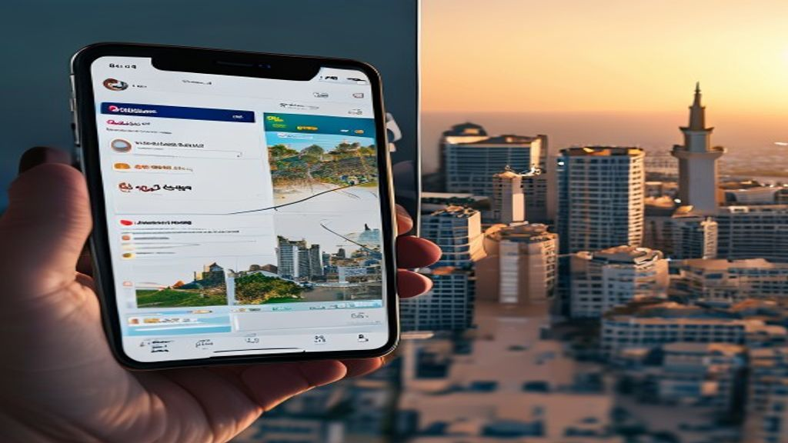
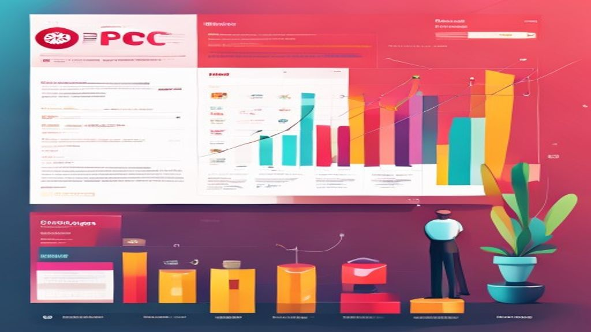

Pourquoi Google Ads est un levier incontournable pour les entreprises marocaines
En résumé : Google Ads au Maroc : Le Guide Complet pour Maximiser Votre ROI SEA en 2025 est une démarche stratégique clé dans le domaine du Google Ads & SEA. Elle permet aux entreprises au Maroc d’optimiser durablement leurs performances digitales, d’augmenter leur visibilité et de maximiser le retour sur investissement (ROI) de leurs campagnes.
Au Maroc, la concurrence en ligne explose. Entre 2020 et 2025, le nombre d'entreprises investissant dans Google Ads a triplé, surtout à Casablanca et Rabat. Mais beaucoup brûlent leur budget sans résultat. Pourquoi? Parce qu'ils copient des stratégies occidentales sans les adapter au marché local. Chez DatRey, on voit des PME marocaines dépenser 50 000 MAD par mois sans comprendre pourquoi le CPC grimpe ou pourquoi le taux de conversion reste à 0,5 %. La réponse est souvent dans le ciblage, les mots-clés en darija/français, et l'optimisation pour les moteurs de recherche générative (GEO).
Définition Google Ads SEA : Google Ads (anciennement AdWords) est la plateforme publicitaire de Google permettant aux entreprises de diffuser des annonces payantes sur le réseau de recherche, display, shopping et vidéo. Le SEA (Search Engine Advertising) désigne l'achat de mots-clés pour apparaître en tête des résultats de recherche, facturé au coût par clic (CPC). Au Maroc, le CPC moyen sur des mots génériques comme 'achat en ligne Maroc' tourne autour de 2,5 MAD.
Le piège numéro un? Lancer Google Ads sans avoir optimisé son site pour la conversion. Vous payez pour du trafic, mais si votre page charge en 8 secondes (moyenne marocaine), vous perdez 40 % de vos visiteurs. Et avec l'essor de l'IA générative (ChatGPT, Perplexity, Google AI Overviews), vos annonces doivent aussi être pensées pour répondre aux questions des utilisateurs, pas seulement pour vendre. C'est là que le GEO entre en jeu.
Comment structurer une campagne Google Ads performante au Maroc
1. Définir des objectifs clairs et mesurables
Avant de toucher à un centime, posez-vous la question : voulez-vous des leads, des ventes, des appels, ou de la notoriété? Au Maroc, les campagnes pour générer des appels téléphoniques marchent très bien pour les services (plombiers, avocats, agences immobilières). Pour l'e-commerce, priorisez les conversions avec un suivi précis via Google Tag Manager. Exemple concret : un client de DatRey à Casablanca, vendeur de mobilier de bureau, a vu son ROAS passer de 2 à 6 en trois mois en passant d'un objectif 'trafic' à 'conversion' avec un suivi des leads WhatsApp.
2. Choisir les bons mots-clés : le mix darija/français/anglais
Le marché marocain est multilingue. Un internaute peut taper 'acheter pc portable pas cher Maroc' ou 'pc portable pas cher Casablanca'. Mais aussi 'laptop rakhiss' en darija. Google Ads permet d'utiliser des mots-clés en plusieurs langues, mais attention : les requêtes en darija sont moins concurrentielles et moins chères. Par exemple, 'meuble salon pas cher Maroc' a un CPC moyen de 3 MAD, tandis que 'meuble salon pas cher Casablanca' est à 2 MAD. Utilisez le Planificateur de mots-clés avec un filtre localisation Maroc. Et pensez aux mots-clés de longue traîne : 'bureau design pas cher livraison gratuite Rabat'.
3. Ciblage géographique précis : villes et quartiers
Ne ciblez pas tout le Maroc si vous livrez uniquement à Casablanca. Utilisez le ciblage par rayon autour de votre point de vente. Pour un restaurant à Rabat, ciblez un rayon de 5 km. Pour un service de livraison de fleurs, ciblez les quartiers chics comme Maârif ou l'Océan. Mais attention : Google peut diffuser vos annonces en dehors de la zone si la requête contient le nom de la ville. Vérifiez les paramètres de 'présence' vs 'intérêt'.
Budget SEA au Maroc : combien investir et comment l'optimiser
Le budget minimum recommandé pour tester Google Ads au Maroc est de 5 000 MAD par mois. Mais beaucoup démarrent avec 2 000 MAD et se découragent. La clé, c'est l'optimisation continue. Voici une répartition type : 70 % sur le search (mots-clés à forte intention), 20 % sur le display (remarketing), 10 % sur le shopping (si e-commerce). Exemple : un e-commerçant de vêtements à Marrakech a investi 15 000 MAD en janvier. En optimisant les enchères (passer de 'maximiser les clics' à 'maximiser les conversions'), il a baissé son CPA de 45 MAD à 28 MAD en 2 semaines.
Les erreurs budgetaires courantes
- Lancer plusieurs groupes d'annonces avec le même mot-clé (cannibalisation).
- Ne pas exclure les mots-clés négatifs : 'gratuit', 'occasion', 'DIY' si vous vendez du neuf.
- Utiliser le réseau Display sans liste de remarketing : vous diluez votre budget.
GEO et Google Ads : préparer vos annonces pour l'IA générative
En 2025, Google AI Overviews (anciennement SGE) affiche des réponses directement dans les résultats de recherche. Vos annonces peuvent apparaître dans ces résumés si elles répondent à des questions précises. Par exemple, une annonce pour une agence de voyage à Casablanca qui dit 'Réservez votre vol Casablanca Paris pas cher' sera moins performante qu'une annonce qui répond à 'Quel est le prix d'un vol Casablanca Paris en mars 2025?' avec un lien vers une page dédiée. Le GEO (Generative Engine Optimization) consiste à structurer votre contenu pour qu'il soit repris par les IA. Utilisez des schémas de FAQ et des listes à puces dans vos pages de destination. Exemple : créez une page 'Guide des prix des vols Casablanca Paris' avec des questions-réponses, puis faites la promouvoir via Google Ads. Résultat : l'IA de Google cite votre page, et votre annonce gagne en visibilité.

Optimisation des pages de destination pour le marché marocain
Votre page de destination (landing page) doit être ultra-rapide. Au Maroc, la connexion mobile est dominante (70 % du trafic). Utilisez des hébergeurs locaux (ou CDN) pour réduire le temps de chargement. Testez avec PageSpeed Insights : visez un score de 80+ sur mobile. Un client de DatRey, une boutique en ligne de produits cosmétiques, a réduit son taux de rebond de 65 % à 35 % simplement en compressant les images et en utilisant un thème AMP. Ajoutez des preuves sociales : témoignages de clients marocains, badges de confiance (paiement sécurisé CMI), et numéro WhatsApp cliquable.
Suivi et analyse : les KPIs qui comptent vraiment
Ne vous focalisez pas sur les impressions. Regardez le taux de conversion, le CPA (coût par acquisition), et le ROAS (retour sur dépenses publicitaires). Pour un e-commerce, un ROAS de 4 signifie que pour 1 MAD dépensé, vous gagnez 4 MAD. Mais attention : si votre marge est de 20 %, un ROAS de 4 donne un bénéfice net de 0,8 MAD. Utilisez Google Analytics 4 et le suivi des conversions hors ligne (appels, formulaires). Au Maroc, beaucoup d'achats se finalisent par téléphone ou WhatsApp. Intégrez ces conversions dans Google Ads en important des données via Google Sheets.
Conclusion : passez à l'action avec DatRey
Google Ads au Maroc est un terrain fertile mais exigeant. Entre la diversité linguistique, les spécificités culturelles et l'émergence du GEO, les entreprises doivent s'adapter en permanence. Chez DatRey, on accompagne les PME marocaines pour transformer chaque clic en client. On ne se contente pas de lancer des campagnes : on optimise chaque étape, du ciblage à la page de destination, en passant par l'analyse post-click. Contactez-nous pour un audit gratuit de votre compte Google Ads. Et n'oubliez pas : le SEA n'est pas une dépense, c'est un investissement. À condition de le piloter avec méthode.